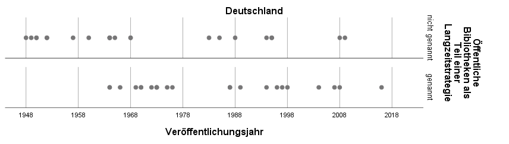
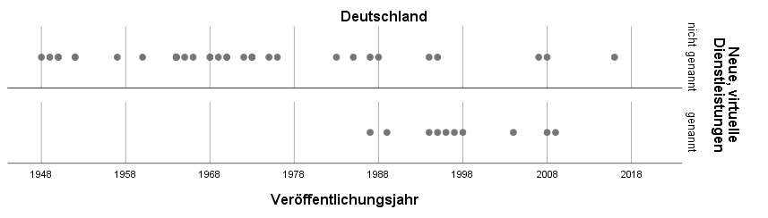
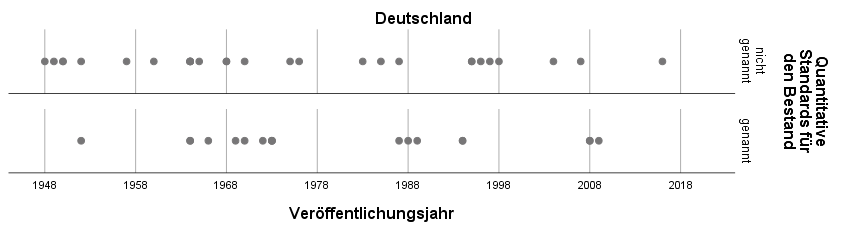

Einleitung
Finnische Öffentliche Bibliotheken werden zu den besten und erfolgreichsten der Welt gezählt, und das schon seit vielen Jahren, ganz egal ob man sich die hohen Benutzer- und Ausleihzahlen, die beeindruckenden Bibliotheksgebäude oder die erfolgreiche Zusammenarbeit mit Schulen im Zusammenhang mit dem guten Abschneiden finnischer Schüler bei den PISA-Tests ansieht. Die in Finnland gesetzlich vorgeschriebene Evaluation der Angebote und Dienstleistungen Öffentlicher Bibliotheken zeigt, dass die Benutzer*innen diese sehr positiv bewerten und ihnen eine hohe Dienstleistungs- und Aufenthaltsqualität bescheinigen. Technische Neuerungen wie die Ausstattung mit PCs und WLAN wurden flächendeckend im ganzen Land in allen Bibliotheken gefördert und finanziert. Auf die skandinavischen Vorzeigeländer
der Öffentlichen Bibliotheken Finnland und Dänemark wird auch in Deutschland vor allem in den Diskussionen um eine nationale Bibliotheksstrategie und ein nationales Bibliotheksgesetz stets hingewiesen.
Warum genau sind die finnischen Öffentlichen Bibliotheken so erfolgreich? Der große Unterschied zum deutschen Öffentlichen Bibliothekswesen besteht darin, dass es in Deutschland kein nationales Bibliotheksgesetz gibt – könnte dieses für den Qualitätsunterschied verantwortlich sein? Allerdings gibt es auch hierzulande nationale Empfehlungen und Pläne für die Bibliotheksarbeit, die zwar, genau wie in Finnland, nicht verpflichtend sind, aber dennoch je nach personellen und finanziellen Ressourcen umgesetzt werden sollten. Unterscheiden sich die Inhalte dieser empfehlenden Papiere so gravierend, dass sich auch daraus ein Qualitätsunterschied erklären ließe?
Zur Beantwortung dieser Fragen habe ich im vergangenen Jahr im Rahmen meiner Masterarbeit (Herde 2019) am Institut für Bibliotheks- und Informationswissenschaft der HU Berlin die nationalen Gesetze, Empfehlungen und Strategien für Öffentliche Bibliotheken in Finnland und Deutschland zwischen 1945 und 2017 verglichen, um grundlegende Unterschiede oder auch Gemeinsamkeiten in der Betrachtung und Planung Öffentlicher Bibliotheken herauszufinden.
Kurze Geschichte der Bibliotheksgesetzgebung in Finnland und Deutschland
Finnland hat eine lange Tradition bezüglich der gesetzlichen Regelung Öffentlicher Bibliotheken. Das erste finnische Volksbüchereigesetz (Finnland. Eduskunta 1928) und die Verordnung zu den Volksbüchereien (Finnland. Opetusministeriö 1928) regelten bereits Aspekte, die bis heute in den 1961, 1986, 1998 und 2016 erneuerten Bibliotheksgesetzen vorkommen, zum Beispiel Gebührenfreiheit, Ausbildung der Bibliotheksleitung, Kooperation, geeignete Räumlichkeiten, Öffnungszeiten, Tätigkeitsstatistik und Finanzierung. Jedoch legte erst das Bibliotheksgesetz von 1961 (Finnland. Eduskunta 1961) den Grundstein für den Erfolg der finnischen Öffentlichen Bibliotheken. Die Entstehung dieses Bibliotheksgesetzes steht im Zusammenhang mit der Entwicklung Finnlands zu einem Wohlfahrtsstaat nach dem Ende des Zweiten Weltkrieges, geprägt durch die starke Einflussnahme des Staates und die Gleichbehandlung aller Bürger*innen, unabhängig von ihrem Einkommen oder ihrem Wohnort. So wurde der Bau neuer Bibliotheksgebäude auf dem Land finanziell gefördert und staatliche Bibliotheksinspektoren unterstützten die Bibliotheksleitenden bei der Ausstattung und dem Betrieb ihrer Bibliotheken auch in den abgelegensten Regionen. Das Bibliotheksgesetz von 1961 bewirkte, dass Anfang der 1980er Jahre kaum mehr Unterschiede zwischen den städtischen und ländlichen Öffentlichen Bibliotheken bestanden. Im Bibliotheksgesetz von 1986 (Finnland. Eduskunta 1986) waren Bibliotheksnetz und Kooperation zentrale Punkte. Das Bibliotheksgesetz von 1998 (Finnland. Eduskunta 1998) legte Öffentliche Bibliotheken als Pflichtaufgabe der Gemeinden fest, eine Evaluation der Dienstleistungen wurde obligatorisch und die Entwicklung virtueller und interaktiver Netzangebote wurde gefordert. Das neueste Gesetz zu den Öffentlichen Bibliotheken, das 2016 in Kraft trat (Finnland. Eduskunta 2016), und die entsprechende Verordnung des Bildungs- und Kulturministeriums zu den Öffentlichen Bibliotheken von 2017 (Finnland. Opetus- ja Kulttuuriministeriö 2017) berücksichtigen die neuen, vielseitigen Dienstleistungen Öffentlicher Bibliotheken. Sie beschreiben genau die Aufgaben der verschiedenen Akteure innerhalb des Bibliotheksnetzes, regeln die Ausbildung und Kenntnisse des Bibliothekspersonals, ebenso die Evaluation und Gebührenfreiheit.
Zur Unterstützung der Gesetze und Verordnungen und zur Gewährleistung, dass die bibliothekarischen Dienstleistungen und Angebote überall im Land von gleichbleibend hoher Qualität sind, werden seit Ende der 1990er Jahre vom Bildungsministerium (finnisch: Opetusministeriö) beziehungsweise seit 2010 Bildungs- und Kulturministerium (finnisch: Opetus- ja Kulttuuriministeriö) unter Beteiligung unter anderem von Vertreter*innen des Finnischen Bibliotheksverbands (finnisch: Suomen Kirjastoseura), des Finnischen Gemeindebunds (finnisch: Suomen Kuntaliitto), von Bibliothekar*innen und Politiker*innen Bibliotheksstrategien und -programme verfasst, die in die staatliche Bildungs- und Kulturpolitik eingebettet sind. Mit den Strategien, die in regelmäßigen Abständen überarbeitet werden, kann man auf gesellschaftlichen oder wirtschaftlichen Wandel schnell reagieren und die bibliothekarischen Dienstleistungen anpassen, zum Beispiel als Reaktion auf die rasante informationstechnologische Entwicklung. Frühere Bibliotheksstrategien betonten unter anderem die Wichtigkeit der ländlichen Nachbarschaftsbibliotheken
(Finnland. Opetus- ja Kulttuuriministeriö 2006) oder die Rolle der Öffentlichen Bibliotheken beim Verhindern einer digital information gap
(Finnland. Opetusministeriö 2003) – immer mit dem Ziel, allen Menschen gleichberechtigten Zugang zu Wissen und Bildung zu gewähren. Die Strategien sind häufig verbunden mit der finanziellen Förderung von Projekten, die allen Bibliotheken gleichermaßen zu Gute kommen sollen, beispielsweise der Ausstattung aller Bibliotheken mit moderner Technik oder der Entwicklung von zentralen Netzangeboten wie Libraries.fi
, dem Internetangebot der finnischen Öffentlichen Bibliotheken.
In Deutschland wurde bereits in der Weimarer Republik über die Frage der Einführung eines nationalen Bibliotheksgesetzes diskutiert, allerdings kam es erst im Jahre 1937 im Rahmen der nationalsozialistischen Umgestaltung der Gesellschaft zu Richtlinien für das Volksbüchereiwesen, die Züge eines Bibliotheksgesetzes trugen, jedoch bis Ende des Zweiten Weltkrieges nicht das Ziel einer Vereinheitlichung des Öffentlichen Bibliothekswesens erreichen konnten. Nach dem Ende des Krieges wurde das Thema Bibliotheksgesetz unter anderem vom Deutschen Büchereiverband wieder aufgegriffen, um mit seiner Hilfe die Grundlage für den Ausbau des Bibliothekssystems zu schaffen, denn vor allem auf dem Land war die Zahl der Öffentlichen Bibliotheken sehr gering. So hatten im Jahr 1950 77 % der Gemeinden keine Öffentliche Bibliothek und 41 % der deutschen Bevölkerung lebten in Gemeinden ohne Öffentliche Bibliothek (Thauer; Vodosek 1991, S. 167). Allerdings kam es nur in der DDR zwischen 1949 und 1968 zu drei Verordnungen, die Gesetzescharakter hatten und die Öffentlichen Bibliotheken im Sinne des Sozialismus entwickeln sollten. In der BRD wurden stattdessen von verschiedenen Akteuren (zum Beispiel dem Deutschen Städtetag, der Ständigen Konferenz der Kultusminister der Länder in der Bundesrepublik Deutschland (KMK) und der Kommunalen Gemeinschaftsstelle für Verwaltungsvereinfachung (KGSt)) Richtlinien, Empfehlungen, Denkschriften, Pläne und Gutachten veröffentlicht, die mit unterschiedlichen Schwerpunkten das Bibliothekswesen regeln und vereinheitlichen sollten (siehe zum Beispiel Deutsche Bibliothekskonferenz u. a. 1973).
Immer wieder wurde die Forderung nach einem nationalen Bibliotheksgesetz laut, das die Existenz der Öffentlichen Bibliotheken sichern könne. Da in Deutschland die Kulturhoheit bei den Ländern liegt, sind jedoch nur Landesbibliotheksgesetze möglich, die Auftrag und Organisation der Bibliotheken eines Bundeslandes regeln. Seit 2008 wurden in fünf deutschen Bundesländern (Thüringen 2008, Sachsen-Anhalt 2010, Hessen 2010, Rheinland-Pfalz 2014 und Schleswig-Holstein 2016) Bibliotheksgesetze erlassen, die sowohl die Tätigkeit der Öffentlichen als auch der Wissenschaftlichen und Spezialbibliotheken beinhalten. In weiteren Bundesländern wurden Gesetzentwürfe oder Bibliotheksentwicklungspläne verfasst.
Vorgehen beim Vergleich finnischer und deutscher Grundlagenpapiere
Für einen systematischen Vergleich der finnischen und deutschen Grundlagenpapiere wurde die Inhaltsanalyse als Methode gewählt, die besonders geeignet ist zur Analyse eines umfangreichen Textkorpus, der in spezifische Analyseeinheiten zerlegt wird. Für jede Analyseeinheit werden anhand vorab definierter Kategorien das Vorliegen bestimmter Merkmale festgestellt und dabei in numerische Werte (Codes) übertragen.
(Volpers 2013, S. 414). Grundlage des Kategoriensystems waren 11 internationale Standards, Empfehlungen und Richtlinien der International Federation of Library Associations and Institutions (IFLA), der United Nations Educational, Scientific and Cultural Organization (UNESCO), des Europarats des European Bureau of Library, Information and Documentation Associations (EBLIDA) und des Europäischen Parlaments, die zwischen 1949 und 2005 erschienen sind (z.B. IFLA 1956, UNESCO 1979, Europarat 2000, IFLA/UNESCO 2005), in denen Aufgaben, Zielsetzungen und gesetzliche Regelungen von Öffentlichen Bibliotheken behandelt werden und die als Hilfestellung für die Weiterentwicklung ihrer Angebote dienen sollen. Aus diesen wurden die für die gegenwärtige und zukünftige Arbeit Öffentlicher Bibliotheken zentralen Themen ermittelt und in ein Kategorienschema überführt. Die 12 übergeordneten Themenbereiche sind:
- Grundsätze von Öffentlichen Bibliotheken,
- Organisation und Verwaltung der Öffentlichen Bibliothekswesens,
- Finanzierung,
- Bestände,
- Unterstützung von lebenslangem Lernen,
- Bibliotheksgebäude und Bibliotheksräume,
- Sammeln, Bewahren und Vermitteln des kulturellen Erbes,
- Stärkung der lokalen Dimension,
- Integrationsförderung,
- Medien- und Informationskompetenz,
- Leseförderung und
- weitere Inhalte (wie neue, virtuelle Dienstleistungen, Bibliotheken als Pflichtaufgabe und Partizipation der Bürger).
Innerhalb dieser Themenbereiche wurde das Vorkommen von insgesamt 92 Einzelthemen in den untersuchten Veröffentlichungen abgeprüft.
Analysiert wurden Veröffentlichungen, die sich auf das gesamte Öffentliche Bibliothekswesen Finnlands und Deutschlands beziehen, also Bibliotheksgesetze und -verordnungen, welche die konkrete Umsetzung der Gesetze regeln, Bibliotheksstrategien, -konzepte, -empfehlungen und -richtlinien und Papiere zu Bibliotheks-, Bildungs- und Kulturpolitik. Konkret waren das 28 finnische und 46 deutsche Papiere, die zwischen 1945 und 2017 erschienen sind beziehungsweise in Kraft waren und die Arbeit Öffentlicher Bibliotheken auf nationaler Ebene geregelt haben.
| Gesetze/Verordnungen | Empfehlungspapiere | |||
|---|---|---|---|---|
| Finnland | Deutschland | Finnland | Deutschland | |
| 1945–1960 | 2 | 2 | 0 | 6 |
| 1961–1985 | 2 | 1 | 1 | 20 |
| 1986–1997 | 3 | 0 | 0 | 10 |
| 1998–2017 | 5 | 0 | 15 | 7 |
| Gesamt | 12 | 3 | 16 | 43 |
Tabelle 1: Nationale Gesetze und empfehlende Papiere zur Arbeit Öffentlicher Bibliotheken in Finnland und Deutschland zwischen 1945 und 2017
Bei den finnischen Papieren handelt es sich um 12 Gesetze und Verordnungen und 16 Strategie- und Politikpapiere, bei den deutschen um 3 Verordnungen und 43 Empfehlungen, Strategien, Positionen und Ähnlichem.
Ergebnisse
Schon formal ist ein Unterschied ins Auge fallend: In Finnland wurden die 16 empfehlenden Papiere von 5 unterschiedlichen Institutionen verfasst; in Deutschland haben 22 unterschiedliche Institutionen die 43 empfehlende Papiere formuliert.
In Deutschland beschäftigen sich also viele Akteure auf verschiedenen Ebenen mit unterschiedlichen Schwerpunkten mit Öffentlichen Bibliotheken; es gibt keine übergeordnete Instanz zur Planung des nationalen Bibliothekswesens und somit auch keine verbindlichen Regelungen auf nationaler Ebene. In Finnland sind es wenige auf nationaler Ebene agierende Akteure, die sich mit der nationalen Bibliotheksplanung befassen. Das Öffentliche Bibliothekswesen stellt sich als Einheit dar, was auch daran zu sehen ist, dass sich die Veröffentlichungen häufig aufeinander beziehen, aufeinander aufbauen und sich ergänzen.
| Finnland | Deutschland |
|---|---|
| Bildungsministerium, Bibliothekskomitee, Finnischer Gemeindebund, Finnischer Bibliotheksverband, Rat der Öffentlichen Bibliotheken | International: UNESCO |
| National: SPD, CDU/CSU, Gewerkschaft Öffentliche Dienste, Transport und Verkehr, Bundesregierung, Wissenschaftliche Dienste des Deutschen Bundestags, Enquete-Kommission „Kultur in Deutschland“ | |
| Überregional: Deutscher Städtetag, Deutscher Städtebund, Kultusministerkonferenz, Deutscher Ausschuss für das Erziehungs- und Bildungswesen, Bund-Länder-Kommission für Bildungsplanung, Kommunale Gemeinschaftsstelle für Verwaltungsvereinfachung | |
| Regional: Arbeitskreis Erwachsenenbildung des Kultusministeriums Baden-Württemberg, Arbeitsgruppe Bibliotheksplan Baden-Württemberg | |
| Vertreter des Bibliothekswesens: Heidelberger Volksbüchereitag, Bibliothekare Öffentlicher Bibliotheken, Arbeitsgemeinschaft der Verleger, Buchhändler und Bibliothekare in der Friedrich-Ebert-Stiftung, Deutscher Bibliotheksverband, Deutsche Bibliothekskonferenz, Bibliothek & Information Deutschland, Fachkonferenz der Staatlichen Büchereistellen in Deutschland |
Tabelle 2: Verfasser nationaler Bibliotheksplanungspapiere in Finnland und Deutschland
Beim inhaltlichen Vergleich der deutschen und finnischen Papiere wurde festgestellt, dass von den 92 Themen, die in den internationalen Richtlinien ermittelt wurden, 91 sowohl in den deutschen als auch in den finnischen Papieren genannt werden (Ausnahme: Medienlesefertigkeit – allerdings beinhaltet in Deutschland wahrscheinlich der Themenkomplex Medienkompetenz
diesen Aspekt).
42 Themen werden in Deutschland und Finnland in gleicher oder sehr ähnlicher Weise betrachtet (das betrifft vor allem die Grundlagen der Arbeit Öffentlicher Bibliotheken wie Gewährung freien Zugangs zu Informationen, die Finanzierung und Verwaltung, Kooperation, das Bibliotheksnetzwerk, Aufgaben wie Leseförderung und Informationskompetenzveranstaltungen und die Bibliothek als sozialen und kulturellen Ort).
50 Themen werden in Deutschland und Finnland unterschiedlich betrachtet, wobei 33 Themen in Finnland häufiger genannt werden, 17 Themen in Deutschland. Grundsätzlich könnte eine vermehrte Nennung darauf hindeuten, dass ein Thema von größerer Bedeutung für das Bibliothekswesen des Landes ist, entweder weil es bereits gesichert oder besonders prekär oder umstritten ist. Auch die Nichtnennung eines Themas kann Unterschiedliches bedeuten, entweder wird dieser Aspekt als selbstverständlich oder aber als irrelevant angesehen. Zusätzlich ist davon auszugehen, dass Themen innerhalb von Gesetzen und Verordnungen per se eine höhere Wichtigkeit besitzen als solche in empfehlenden Papieren. So kann nur von Thema zu Thema entschieden werden, ob ein gravierender Unterschied in der Betrachtung vorliegt oder nicht. Im Folgenden werden einige Unterschiede zwischen den finnischen und deutschen Papieren vorgestellt.
Finnland: Einbindung in nationale Langzeitstrategien
Bei den Schwerpunkten in den finnischen Papieren handelt es sich genau um die Themen, die in internationalen und auch deutschen Veröffentlichungen als Stärken des finnischen Bibliothekswesens herausgestellt werden, wie das Eingebundensein in nationale Bildungs- und Kulturstrategien und die Existenz einer nationalen Bibliotheksstrategie.

Einheit des Bibliothekssystems
Durch alle finnischen Papiere hindurch zieht sich das Ziel der Vereinheitlichung des Bibliothekswesens im ganzen Land. Grundlage hierfür bilden Angebote und Dienstleistungen, die in allen Bibliotheken des Landes in gleichbleibender Qualität vorhanden sind, wofür vor allem kooperativ erstellte Angebote und gut ausgebildetes Personal sorgen sollen.
Obligatorischer Masterabschluss für Leitungspositionen
In Finnland muss die Bibliotheksleitung immer einen Masterabschluss haben, wohingegen in Deutschland nur für einen kleinen Teil der Bibliotheken, nämlich ab Sektion 2 (= Öffentliche Bibliothekssysteme und Bibliotheken für Versorgungsbereiche ab 100.000 Einwohner), ein solcher erforderlich ist. Sowohl die kooperativen Angebote als auch die Ausbildung des Personals sind schon in den ersten finnischen Bibliotheksgesetzen enthalten gewesen und haben dazu geführt, dass man im ganzen Land vergleichbar gute Öffentliche Bibliotheken findet.
Obligatorische Evaluation
Zur Qualitätssicherung gehört in Finnland seit 1998 auch die gesetzlich vorgeschriebene Evaluation, denn nur mit ihrer Hilfe können die angebotenen Leistungen auch überprüft werden. Natürlich gibt es auch in Deutschland Evaluationen, allerdings werden sie von den Bibliotheken selbst oder deren Trägern initiiert und durchgeführt, eine Vereinheitlichung der Leistungen aller Bibliotheken wird nicht angestrebt.
Gebührenfreiheit
Die Gebührenfreiheit in Finnland ist ebenfalls eine der Regelungen, die bereits seit dem ersten Bibliotheksgesetz festgeschrieben wurden. Die Gebührenfrage wird in Deutschland, wie auch die Rechte und Pflichten der Benutzer*innen und die Bibliotheksordnung, in die Entscheidungsgewalt der Bibliotheken beziehungsweise ihrer Träger gelegt, obwohl auch die deutschen Landesbibliotheksgesetze zumindest überwiegend die gebührenfreie Vor-Ort-Benutzung vorschreiben.
Neue und virtuelle Dienstleistungen
Die Öffentlichen Bibliotheken in Finnland scheinen sich heute stärker mit neuen Trends und Entwicklungen zu befassen, denn die hybride Bibliothek beziehungsweise ein gleichberechtigtes Nebeneinander von physischen und virtuellen Materialien, neue und virtuelle Dienstleistungen, zeitgemäße Technik und Medienlesefähigkeit tauchen vor allem oder ausschließlich in neueren finnischen Papieren auf. In deutschen Papieren wurde in den 1990er Jahren die Einführung von PCs gefordert. Da die moderne Informationstechnik im Alltag der Menschen eine wichtige Rolle spielt, müssen auch die Öffentlichen Bibliotheken entsprechende Angebote und Dienstleistungen vorhalten, um attraktiv zu bleiben. Weil die Benutzer*innen immer besser ausgebildet sind und gute Kenntnisse in den neuen Technologien besitzen, muss sich das Personal entsprechend weiterbilden, um seinen Informationsvorsprung zu bewahren und den Informationssuchenden in den neuen Medien Hilfestellung bieten zu können.

Neue, virtuelle Dienstleistungen
Deutschland: Ausstattungsstandards im Fokus
Die Themen, auf die in deutschen Papieren besonderer Wert gelegt wird, betreffen vor allem das konkrete Angebot, das Öffentliche Bibliotheken ihren Benutzer*innen machen sollten, das heißt es werden quantitative Standards für Bestände, Personal, Gebäude und Einrichtung vorgegeben sowie Hinweise für Gebäude und zum Bestandsaufbau, was den Bedarf für unterschiedliche Altersgruppen und unterschiedliche Inhalte angeht. Diese Veröffentlichungen, die spezifische Ratschläge für das Betreiben einer guten Bibliothek (wieviel Platz sollte für wie viele Bücher/Medien welchen Inhalts für welche Benutzergruppe vorhanden sein) beinhalten und überwiegend im Zeitraum 1964–1973 erschienen sind, zielen offensichtlich darauf, Bibliotheksvertreter*innen eine Argumentationshilfe gegenüber Entscheidungsträgern zu geben.

Quantitative Standards für den Bestand
In der finnischen Bibliotheksgesetzgebung werden dagegen beispielsweise nicht mehr die verschiedenen Medienformate aufgezählt, die den Bibliotheksnutzer*innen zur Verfügung stehen sollten, sondern es werden die Dienstleistungen beschrieben, die von Öffentlichen Bibliotheken angeboten werden sollten, wozu auch das gleichberechtigte Nebeneinander von Materialien, Sammlungen und Angeboten jeglicher Art passt (Finnland. Eduskunta 2016, § 6). Eine Erklärung für das Fehlen quantitativer Standards in den meisten finnischen Papieren könnte sein, dass es schon seit Anfang der 1960er Jahr in jeder finnischen Gemeinde eine ausreichend ausgestattete Öffentliche Bibliothek gibt. Eventuell finden sich entsprechende Vorgaben aber auch in praktischen Handreichungen für Bibliotheken, die unterhalb der Untersuchungsebene dieses Beitrags liegen. .
Fazit
Trotz der großen Anzahl gleich behandelter Themen in deutschen und finnischen Papieren wirkt das finnische Öffentliche Bibliothekswesen mit seinen thematischen Schwerpunkten sehr viel mehr als Einheit als das deutsche Öffentliche Bibliothekswesen. Alles ist darauf ausgerichtet, den Benutzer*innen im ganzen Land ein aktuelles, gleichbleibend gutes Angebot in allen Bereichen anzubieten. Auch in den deutschen Veröffentlichungen werden Vorschläge für ein einheitliches Bibliotheksnetzwerk gemacht, wobei man durch die Betonung von quantitativen Mindeststandards für Ausstattung und Medienangebot den Eindruck bekommt, dass es eher um die Existenz einzelner Bibliotheken geht als um die Qualität aller Bibliotheken. Auch das Fehlen einer übergeordneten Instanz, die verbindliche Regelungen auf nationaler Ebene festlegt, ist deutlich spürbar, denn natürlich können Ratschläge gemacht und Hinweise gegeben werden – diese haben jedoch wenig Wirkung, wenn ihre Befolgung nicht überprüft oder gefordert werden kann oder entsprechende finanzielle oder personelle Ressourcen zur Umsetzung durch mangelnde politische Unterstützung fehlen.
Die Ausgangsfrage, ob ein Grund für den Erfolg der finnischen Bibliotheken die vorhandene gesetzliche Grundlage ist, würde ich in jedem Fall mit Ja
beantworten, sie ist es aber nicht allein. Das einheitliche Bild, das sich in der Gesamtheit der finnischen Papiere zeigt, das Ziehen an einem Strang
, um die bestmögliche Leistung aller Bibliotheken zu erreichen (also eine kooperative Haltung innerhalb des Berufsstands selbst) hat genauso wie die Anerkennung der Bedeutung der Öffentlichen Bibliotheken durch die Politik dazu beigetragen, dass sich das finnische Bibliothekswesen auf der gesetzlichen Grundlage zu dem entwickelt hat, was es heute ist.
Die Vielzahl der Akteur*innen bei der Planung des deutschen Öffentlichen Bibliothekswesens erzeugt ein sehr viel diffuseres Bild, obwohl im Laufe des untersuchten Zeitraums natürlich auch richtungweisende deutsche Planungspapiere erschienen sind, die aber durch die fehlende gesetzliche Grundlage und Möglichkeit zur Durchsetzung der Vorschläge keine einheitliche Entwicklung ermöglichen konnten. Auch in Deutschland gibt es hervorragende Öffentliche Bibliotheken, gute Netzwerke und innovative Angebote. Für eine vergleichbare Entwicklung aller Bibliotheken wäre jedoch mehr politischer Wille nötig, um doch zumindest eine gemeinsame nationale Bibliothekspolitik auf die Beine zu stellen, wofür auch eine nationale Planungseinheit nützlich wäre. Der deutsch-finnische Vergleich zeigt, dass das Zusammenwirken aller Akteure immer noch das beste Ziel erreicht – Absichtserklärungen einzelner Teile des Systems können hingegen ohne Wirkung bleiben.
Literatur
Deutsche Bibliothekskonferenz; Deutscher Büchereiverband; Arbeitsstelle für das Büchereiwesen (1973): Bibliotheksplan 1973. Entwurf eines umfassenden Bibliotheksnetzes für die Bundesrepublik Deutschland. Berlin: Dt. Bibliothekskonferenz.
Europarat (2000): Bibliotheksgesetzgebung und -politik in Europa. Richtlinien [12.10.1999]. In: Bibliotheksgesetzgebung in Europa. Diskussionsbeiträge und Länderberichte. Hrsg. von Christiane Bohrer. Bad Honnef: Bock + Herchen (Bibliothek und Gesellschaft), S. 27–35.
Finnland. Opetus- ja Kulttuuriministeriö (2006): Library development program 2006–2010. The library as an integrated service center for rural and urban areas. Helsinki.
Finnland. Opetusministeriö (2003): Bibliothekenstrategie 2010. Politik des Bildungsministeriums zur Sicherstellung des Zugangs zu Wissen und Kultur. Öffentliche Bibliotheken in Finnland. Helsinki. (Veröffentlichungen des Bildungsministeriums 39).
Herde, Sari (2019): Grundsätzlich besser? Finnlands nationale Konzepte, Strategien und Empfehlungen für Bibliotheken. Masterarbeit. Berlin: HU Berlin, Institut für Bibliotheks- und Informationswissenschaft.
IFLA (1956): Die Entwicklung des Öffentlichen Bibliothekswesens. IFLA-Memorandum. – In: Bücherei und Bildung 7, S. 239–247.
IFLA; UNESCO (2005): Dienstleistungen Öffentlicher Bibliotheken. IFLA/UNESCO Richtlinien für die Weiterentwicklung. München: K.G. Saur.
Thauer, Wolfgang; Vodosek, Peter (1990): Geschichte der öffentlichen Bücherei in Deutschland. 2. Aufl. Wiesbaden: Harrassowitz.
UNESCO (1979): Unesco public library manifesto. In: Unesco journal of information science, librarianship and archives administration Vol. 1, No. 4, S. 230–232.
Volpers, Helmut (2013): Inhaltsanalyse. In: Handbuch Methoden der Bibliotheks- und Informationswissenschaft. Bibliotheks-, Benutzerforschung, Informationsanalyse. Hrsg. von Konrad Umlauf, Michael S. Seadle u.a. Berlin, Boston: De Gruyter Saur.
Gesetze und Verordnungen
Finnland. Eduskunta (1928): Kansankirjastolaki 131/1928.
Finnland. Eduskunta (1961): Kirjastolaki 235/1961.
Finnland. Eduskunta (1986): Kirjastolaki 235/1986.
Finnland. Eduskunta (1998): Kirjastolaki 904/1998.
Finnland. Eduskunta (2016): Laki yleisistä kirjastoista 1492/2016. (Englische Übersetzung: https://www.finlex.fi/en/laki/kaannokset/2016/20161492), zuletzt geprüft am 23.3.2020
Finnland. Opetus- ja Kulttuuriministeriö (2017): Opetus- ja kulttuuriministeriön asetus yleisistä kirjastoista 660/2017.
Finnland. Opetusministeriö (1928): Asetus kansankirjastoista 144/1928.
Sari Herde hat Finnougristik an der Universität Hamburg studiert und ist seit 2002 Fremdsprachenassistentin in der Osteuropa-Abteilung der Staatsbibliothek zu Berlin. Berufsbegleitendes Fernstudium der Bibliotheks- und Informationswissenschaft am IBI der HU Berlin von 2017-2019.